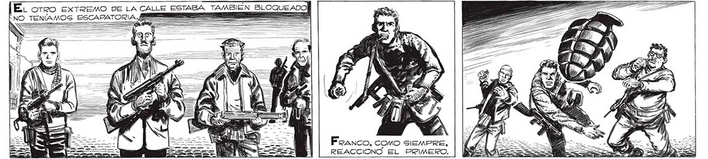
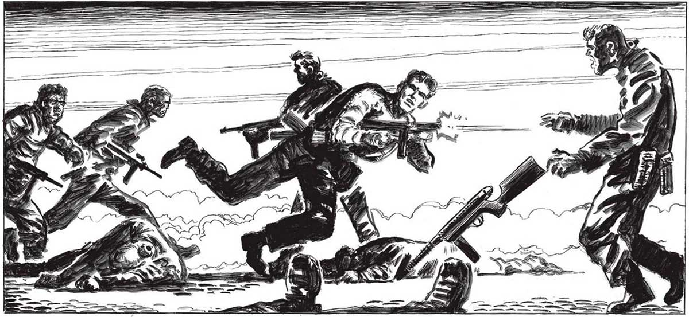
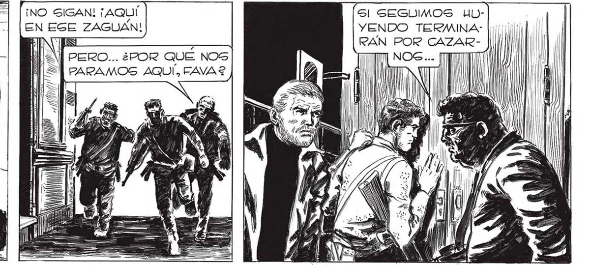

EL orro EXTREMO DE LA CALLE ESTABA TAMBIEN BLOQUEADO] NO TENÍAMOS ESCAPATORIA MEE ; 259 II) Il | 111 1) Feanco, como SIEMPRE, REACCIONÓ EL PRIMERO. ¡NO SIGAN! ¡AQUÍ Sl SEGUIMOS UuULbEN EGE ZAGUÁN! YENDO TERMINA: | 01100: ¡ ÉS - RAN POR CAZAR- || PERO... ¿POR QUE NOS PARAMOS AQUÍ, FAVA2


